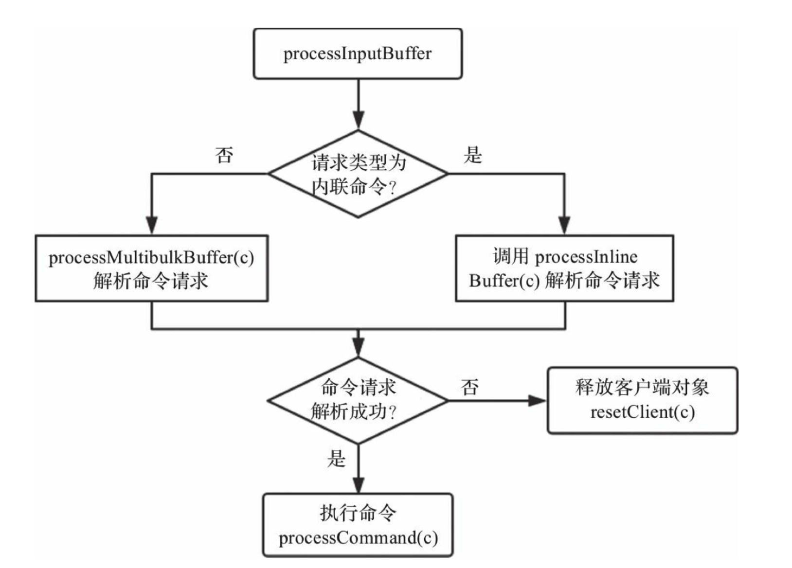

服务器处理客户端命令请求的整个流程，包括服务器启动监听，接收命令请求并解析，执行命令请求，返回命令回复等。
Redis服务器是典型的事件驱动程序，因此事件处理显得尤为重要，而Redis将事件分为两大类：文件事件与时间事件。文件事件即socket的读写事件，时间事件用于处理一些需要周期性执行的定时任务。
1、基本知识
1.1、Redis 对象
Redis 是一个 key-value 型数据库， key只能是字符串， vlaue可以是 字符串、列表、集合、有序集合、散列表， 这5中数据类型用结构体 robj表示，robj被称为 Redis 对象。
robj结构体如下所示：
typedef struct redisObject {
unsigned type:4; // 对象类型
unsigned encoding:4; // 对象编码
unsigned lru:LRU_BITS; //缓存淘汰使用, 占24比特
int refcount; //存储当前对象的引用次数，用于实现对象的共享
void *ptr; //指向实际存储的某一种数据结构
} robj;
- 结构体robj的type字段表示对象类型，由 encoding 字段决定。
#define OBJ_STRING 0
#define OBJ_LIST 1
#define OBJ_SET 2
#define OBJ_ZSET 3
#define OBJ_HASH 4
结构体 robj 的ptr
ptr是void* 类型的指针，指向实际存储的某一种数据结构的地址。
结构体 robj 的 refcount
refcount 存储当前对象的引用次数，用于实现对象的共享。共享时 refcount加1；删除对象时，refcount减1；当refcount值为0时，释放对象空间。
只有当对象robj存储的是0～10000的整数时，对象robj才会被共享，且这些共享整数对象的引用计数初始化为INT_MAX，保证不会被释放。
结构体 robj 的 lru
用于实现缓存淘汰策略，可以在配置文件中使用maxmemory-policy配置已用内存达到最大内存限制时的缓存淘汰策略。lru根据用户配置的缓存淘汰策略存储不同数据，常用的策略就是LRU与LFU。
- LRU的核心思想是，如果数据最近被访问过，那么将来被访问的几率也更高，此时lru字段存储的是对象访问时间；
- LFU的核心思想是，如果数据过去被访问多次，那么将来被访问的频率也更高，此时lru字段存储的是上次访问时间与访问次数，lru的低8比特存储的是对象的访问次数，高16比特存储的是对象的上次访问时间。
结构体 robj 的 encoding
结构体 robj 的 encoding 表示当前对象的底层存储采用的数据结构，即对象的编码。
| 编码常量 |
编码所对应的底层数据结构 |
可存储对象类型 |
| OBJ_ENCODING_INT |
long类型的整数 |
字符串 |
| OBJ_ENCODING_EMBSTR |
embstr编码的简单动态字符串 |
字符串 |
| OBJ_ENCODING_RAW |
简单动态字符串 |
字符串 |
| OBJ_ENCODING_Quicklist |
快速列表 |
列表 |
| OBJ_ENCODING_HT |
字典 |
集合、散列表、有序集合 |
| OBJ_ENCODING_ZIPLIST |
压缩列表 |
散列表、有序集合 |
| OBJ_ENCODING_INTSET |
整数集合 |
集合 |
| OBJ_ENCODING_SKIPLIST |
跳跃表和字典 |
有序集合 |
| OBJ_ENCODING_STREAM |
stream |
stream |
| OBJ_ENCODING_LINKEDLIST |
双端链表(不再使用) |
不再使用 |
| OBJ_ENCODING_ZIPMAP |
未使用 |
未使用 |
对象内存回收
由于C语言不具备自动回收内存的功能，所以Redis在自己的对象系统中构建了一个引用计数技术实现的内存回收机制。程序可以通过跟踪对象的引用计数信息，在适当的时候自动释放对象并进行内存回收。
redisObject 结构中的引用计数器refcount会随着对象的使用状态而不断变化：
- 在创建一个新对象是，引用计数的值会被初始化为 1
- 当对象被一个新程序使用的时候，它的引用计数值会被增加 1
- 当对象不再被一个新程序使用的时候，它的引用计数值会被减少 1
- 当对象的引用计数值变为0的时候，对象所占用的内存会被释放
对象的整个生命周期可以划分为创建对象、操作对象、释放对象三个阶段。
为了节约内存空间，Redis 会共享 值为 0 ~ 9999 的字符串对象，但是为啥只是共享 0 ~ 9999的整数字符串呢？
当服务器考虑讲一个共享对象设置为键的值对象时，程序需要先检查给定的共享对象和键想创建的目标对象是否完全相同，只有在共享对象和目标对象完全相同的情况下，程序才会将共享对象用作键的值对象，而共享一个对象保存的值越复杂，验证共享对象和目标对象是否相同所需的复杂度就会越高，消耗cpu时间也会越多。
对象的空闲时长
redisObject 对象结构的最后一个属性 lru记录了对象最后一次被命令程序访问的时间。
命令 object idletime 可以打印出给定键的空闲时间，这一空闲时长是通过将当前时间减去键的值对象 lru 时间计算得出的。
键的空闲时间有一项作用：如果服务器打开了maxmemory选项，并且服务器用于回收内存的算法为 volatile-lru或者 allkeys-lru，那么当服务器占用的内存数超过了maxmemory现象所设置的上限值，空闲时长较高的那部分键优先被服务器释放，从而回收内存。
1.2、服务端结构体redisServer
结构体redisServer存储Redis服务器的所有信息，包括但不限于数据库、配置参数、命令表、监听端口与地址、客户端列表、若干统计信息、RDB与AOF持久化相关信息、主从复制相关信息、集群相关信息等。
一个redisDb就代表了一个数据库，而redisServer 中则保存了它所设计到的所有数据库的数组。
struct redisServer {
// 配置文件绝对路径
char *configfile;
// 数据库的数目,默认16，可通过参数databases配置
int dbnum;
// 数据库数组，数组的每个元素都是redisDb类型
redisDb *db;
//命令字典，redis支持的所有命令都存储在这个字典中，value值为struct redisCommand对象
dict *commands;
// redis的事件循环，类型为aeEventLoop
aeEventLoop *el;
// 服务器监听端口号，默认端口号 6379
int port;
//绑定的所有IP地址，可以通过参数bind配置多个
char *bindaddr[CONFIG_BINDADDR_MAX];
// 用户配置的IP地址数目
int bindaddr_count;
//针对bindaddr字段的所有IP地址创建的socket文件描述符
int ipfd[CONFIG_BINDADDR_MAX];
//创建的socket文件描述符数目
int ipfd_count;
//当前连接到Redis服务器的所有客户端
list *clients;
//最大空闲时间，可通过参数timeout配置
int maxidletime;
}
默认情况下，redis客户端的目标数据库为0号数据库，但客户端可以通过执行 select 命令来切换目标数据库。而客户端 client 结构中db属性则记录了它当前的目标数据库
1.3、客户端结构体 client
Redis是典型的客户端服务器结构，客户端通过socket与服务端建立网络连接并发送命令请求，服务端处理命令请求并回复。Redis使用结构体client存储客户端连接的所有信息，包括但不限于客户端的名称、客户端连接的套接字描述符、客户端当前选择的数据库ID、客户端的输入缓冲区与输出缓冲区等。
typedef struct client {
uint64_t id;
int fd;
redisDb *db;
robj *name;
time_t lastinteraction
sds querybuf;
int argc;
robj **argv;
struct redisCommand *cmd;
list *reply;
unsigned long long reply_bytes;
size_t sentlen;
char buf[PROTO_REPLY_CHUNK_BYTES];
int bufpos;
} client;
// 用来管理数据库相关数据和实现相关操作
typedef struct redisDb {
int id; // id为数据库序号，默认情况下Redis有16个数据库，id序号为0～15。
long long avg_ttl; //avg_ttl存储数据库对象的平均TTL，用于统计
dict *dict; //键空间散列表，存储数据库所有键值对。
dict *expires; //过期时间散列表，存放键的过期时间，注意dict和expires中的键都指向同一个键的sds。
dict *blocking_keys; // 处于阻塞状态的键和对应的client，比如blpop命令阻塞键和对应客户端，而解除客户端的阻塞状态有两种 1：进行push操作；2：阻塞超时
dict *ready_keys; //解除阻塞状态的键和对应的client
list *defrag_later; // 逐渐尝试逐个碎片整理的key列表
dict *watched_keys; //watch的键和对应的client，主要用于事务
} redisDb;
各字段含义如下:
- id为客户端唯一ID，通过全局变量server.next_client_id实现
- fd为客户端socket的文件描述符
- db为客户端使用select命令选择的数据库对象
- name 客户端名称，可以使用命令 client setname 设置
- lastinteraction 客户端上次与服务器交互的时间，以次实现客户端的超时处理。
- querybuf：输入缓冲区，recv函数接收到的客户端命令请求会暂时缓存在此缓冲区
- argc：输入缓冲区的命令请求时按照Redis协议格式编码字符串，需要解析出命令请求的所有参数，参数个数存储在argc字段，参数内容被解析为robj对象，存储在argv数组
- cmd：待执行的客户端命令
- reply：输出链表，存储待返回给客户端的命令回复数据。链表节点存储的值类型为 clientReplyBlock，定义为如下：
typedef struct clientReplyBlock {
size_t size, used;
char buf[];
} clientReplyBlock;
- reply_bytes：表示输出链表中所有节点的存储空间的总和
- sentlen：表示已返回给客户端的字节数
- buf：输出缓冲区，存储待返回给客户端的命令回复数据，bufpos表示输出缓冲区中数据的最大字节位置，sentlen~bufpos区间的数据都是需要返回给客户端的。
1.4、命令结构体 redisCommond
Redis支持的所有命令初始都存储在全局变量redisCommandTable，类型为redisCommand，结构体redisCommand相对简单，主要定义了命令的名称、命令处理函数以及命令标志等
struct redisCommand {
//命令名称
char *name;
//命令处理函数
redisCommandProc *proc;
//命令参数数目,用于校验命令请求格式是否正确
int arity;
//命令标志，例如标识命令时读命令还是写命令
char *sflags;
//命令的二进制标志，服务器启动时解析sflags字段生成。
int flags;
// calls :从服务器启动至今命令执行的次数，用于统计。
// 从服务器启动至今命令总的执行时间，microseconds/calls即可计算出该命令的平均处理时间，用于统计
long long microseconds, calls;
};
1.5、事件处理
Redis服务器是典型的事件驱动程序，而事件又分为 文件事件（socket的可读可写事件） 与 时间事件（定时任务） 两大类。无论是文件事件还是时间事件都封装在结构体aeEventLoop中：
typedef struct aeEventLoop {
//事件循环是否结束
int stop;
//为文件事件数组，存储已经注册的文件事件
aeFileEvent *events;
//存储被触发的文件事件
aeFiredEvent *fired;
//多个时间事件形成链表，timeEventHead即为时间事件链表头节点
aeTimeEvent *timeEventHead;
// Redis底层可以使用4种 I/O 多路复用模型（kqueue、epoll等），apidata是对这4种模型的进一步封装。
void *apidata
//Redis服务器需要阻塞等待文件事件的发生，进程阻塞之前会调用beforesleep函数，
//进程因为某种原因被唤醒之后会调用aftersleep函数
aeBeforeSleepProc *beforesleep;
aeBeforeSleepProc *aftersleep;
} aeEventLoop;
Redis有多个定时任务，因此理论上应该有多个时间事件，多个时间事件形成链表，timeEventHead即为时间事件链表头节点；
Redis服务器需要阻塞等待文件事件的发生，进程阻塞之前会调用beforesleep函数，进程因为某种原因被唤醒之后会调用aftersleep函数。
函数beforesleep会执行一些不是很费时的操作，如：集群相关操作、过期键删除操作（这里可称为快速过期键删除）、向客户端返回命令回复等。
事件驱动程序通常在server 启动过程的最后一步开启事件循环，之后只需等待事件发生处理文件事件和时间事件即可。
1.5.1、文件事件
Redis客户端通过TCP socket与服务端交互，文件事件指的就是socket的可读可写事件。socket读写操作有阻塞与非阻塞之分。
采用阻塞模式时，一个进程只能处理一条网络连接的读写事件，为了同时处理多条网络连接，通常会采用多线程或者多进程，效率低下；非阻塞模式下，可以使用目前比较成熟的I/O多路复用模型，如select/epoll/kqueue等，视不同操作系统而定。
epoll是Linux内核为处理大量并发网络连接而提出的解决方案，能显著提升系统CPU利用率。
Redis并没有直接使用epoll提供的API，而是同时支持4种I/O多路复用模型，并将这些模型的API进一步统一封装。
Redis在编译阶段，会检查操作系统支持的I/O多路复用模型，并按照一定规则决定使用哪种模型。
1.5.2、时间事件
通过文件事件一节可以知道，事件循环执行函数aeProcessEvents的主要逻辑：①查找最早会发生的时间事件，计算超时时间；②阻塞等待文件事件的产生；③处理文件事件；④处理时间事件。时间事件的执行函数为processTimeEvents。
Redis服务器内部有很多定时任务需要执行，定时任务被封装为时间事件aeTimeEvent对象，多个时间事件形成链表，存储在aeEventLoop结构体的timeEventHead字段，它指向链表首节点。
typedef struct aeTimeEvent {
//时间事件唯一ID，通过字段eventLoop->timeEventNextId实现
long long id;
//时间事件触发的秒数与毫秒数
long when_sec;
long when_ms;
//函数指针，指向时间事件处理函数
aeTimeProc *timeProc;
//函数指针，删除时间事件节点之前会调用此函数
aeEventFinalizerProc *finalizerProc;
//指向对应的客户端对象
void *clientData;
//指向下一个时间事件节点
struct aeTimeEvent *next;
} aeTimeEvent;
函数serverCron实现了Redis服务器所有定时任务的周期执行。serverCron函数的执行时间不能过长，否则会导致服务器不能及时响应客户端的命令请求。
2、server启动过程
Redis服务器的启动过程，主要分为server初始化，监听端口以及等待命令3节。
服务器初始化主流程可以简要分为7个步骤：
①初始化配置，给配置参数赋初始值，包括用户可配置的参数，以及命令表的初始化；
②加载并解析配置文件；
③初始化服务端内部变量，比如客户端链表、数据库、全局变量和共享对象等；
④创建事件循环eventLoop，即分配结构体所需内存，并初始化结构体各字段；epoll就是在此时创建的；
⑤创建socket并启动监听，所有创建的socket都会设置为非阻塞模式，原因在于Redis 使用了IO多路复用模式，其要求socket读写必须是非阻塞的，用户可通过指令port配置socket绑定端口号，指令bind配置socket 绑定IP地址；；
⑥创建文件事件与时间事件；
⑦开启事件循环，等待文件时间和时间事件发生即可。
void aeMain(aeEventLoop *eventLoop) {
eventLoop->stop = 0; //开始事件循环
while (!eventLoop->stop) {
if (eventLoop->beforesleep != NULL)
eventLoop->beforesleep(eventLoop); //事件处理主函数
aeProcessEvents(eventLoop, AE_ALL_EVENTS|AE_CALL_AFTER_SLEEP);
}
}
int aeProcessEvents(aeEventLoop *eventLoop, int flags) {
shortest = aeSearchNearestTimer(eventLoop);
long long ms = shortest->when_sec - now_sec)*1000 + shortest->when_ms - now_ms;
…………
//阻塞等待文件事件发生
numevents = aeApiPoll(eventLoop, tvp);
for (j = 0; j < numevents; j++) {
aeFileEvent *fe = &eventLoop->events[eventLoop->fired[j].fd];
//处理文件事件，即根据类型执行rfileProc或wfileProc
}
//处理时间事件
processed += processTimeEvents(eventLoop);
}
TCP是基于字节流的可靠传输层协议，为了提升网络利用率，一般默认都会开启Nagle。当应用层调用write函数发送数据时，TCP并不一定会立刻将数据发送出去，根据Nagle算法，还必须满足一定条件才行。
Nagle是这样规定的：如果数据包长度大于一定门限时，则立即发送；如果数据包中含有FIN（表示断开TCP链接）字段，则立即发送；如果当前设置了TCP_NODELAY选项，则立即发送；如果以上所有条件都不满足，则默认需要等待200毫秒超时后才会发送。
TCP是可靠的传输层协议，但每次都需要经历“三次握手”与“四次挥手”，为了提升效率，可以设置SO_KEEPALIVE，即TCP长连接，这样TCP传输层会定时发送心跳包确认该连接的可靠性。
3、命令处理过程
命令的处理过程，此过程分为3个阶段：解析命令请求、调用命令和返回结果给客户端。
3.1、命令解析
TCP是一种基于字节流的传输层通信协议，因此接收到的TCP数据不一定是一个完整的数据包，其有可能是多个数据包的组合，也有可能是某一个数据包的部分，这种现象被称为半包与粘包。
为了区分一个完整的数据包，通常有如下3种方法：①数据包长度固定；②通过特定的分隔符区分，比如HTTP协议就是通过换行符区分的；③通过在数据包头部设置长度字段区分数据包长度，比如FastCGI协议。
SET redis-key value1
被翻译为如下结构
*3\r\n$3\r\nSET\r\n$9\r\nredis-key\r\n$6\r\nvalue1\r\n
Redis 使用自定义格式区分不同的命令，客户端会对命令请求转换为如下的协议格式，其中换行符 \r\n 用于区分命令请求的若干参数，“*3”表示该命令请求有3个参数，“$3”表示第一个参数长度为3，顺序读取三个字符SET ， “$9”表示第二个参数的长度，读取为redis-key ， “$6” 表示第三个参数长度为，读取为value1
Redis服务器接收到的命令请求首先存储在客户端对象的querybuf 输入缓冲区，然后解析命令请求各个参数，并存储在客户端对象的argv（参数对象数组）和argc（参数数目）字段。
客户端命令请求的入口函数为readQueryFromClient，会读取socket数据存储到客户端对象的输入缓冲区，并调用函数processInputBuffer解析命令请求。
processInputBuffer解析流程
3.2、命令调用
解析完命令请求之后，会调用函数 processCommand 处理该命令请求，而处理命令请求之前还有很多校验逻辑，比如1、客户端是否已经完成认证，2、命令请求参数是否合法，3、如果是quit命令直接返回并关闭客户端，4、执行函数 lookupCommand 查找命令后，如果命令不存在返回错误等，所有的校验规则通过后，才会调用命令处理函数执行命令。
命令执行完之后，如果有必要，还需要更新统计信息，记录慢查询日志，AOF 持久化该命令请求，传播命令请求给所有的从服务器等。
int processCommand(client *c) {
...
if (c->flags & CLIENT_MULTI
&& c->cmd->proc != execCommand
&& c->cmd->proc != discardCommand
&& c->cmd->proc != multiCommand
&& c->cmd->proc != watchCommand) {
//如果client有CLIENT_MULTI标志并且不是exec，discard， multi和watch命令，则将该命令放入队列
queueMultiCommand(c); //放入队列
addReply(c,shared.queued);
} else {
//否则调用call命令
call(c,CMD_CALL_FULL);
...
}
...
}
```
### 3.3、返回结果
Redis服务器返回结果类型不同，协议格式不同，而客户端可以根据返回结果的第一个字符判断返回类型。
Redis的返回结果可以分为5类：
- 状态回复，第一个字符是`“+”`；例如，SET命令执行完毕会向客户端返回`“+OK\r\n”`。
- 错误回复，第一个字符是“-”。例如，当客户端请求命令不存在时，会向客户端返回`“-ERR unknown command'testcmd'”`。
- 整数回复，第一个字符是 “:”。例如，INCR命令执行完毕向客户端返回 `“:100\r\n”`。
- 批量回复，第一个字符是` "$"`。例如，GET命令查找键向客户端返回结果`"$5\r\nhello\r\n"`，其中`$5`表示返回字符串长度
- 多条批量回复，第一个字符是`“*”`。例如，LRANGE命令可能会返回多个值，格式为`“*3\r\n$6\r\nvalue1\r\n$6\r\nvalue2\r\n$6\r\nvalue3\r\n”`，与命令请求协议格式相同，`“*3”`表示返回值数目，`“$6”`表示当前返回值字符串长度。